Multi-tenant infrastructure data collection, vulnerability correlation, and CMDB population platform. Built for IT operations teams managing complex hybrid environments.
Capabilities
A complete data collection platform covering connectors, vulnerability management, authentication, integrations, and reporting in a single deployable unit.
VMware vCenter, ESXi, Azure, AWS, Nutanix, HAProxy, Cisco, Juniper, Palo Alto, SNMP, WMI, SSH, and more. Modular connector framework for custom sources.
Per-host CVE correlation with CVSS v3 scoring, risk prioritisation, compliance posture, and vulnerability lifecycle tracking from detection through remediation.
All connector credentials, SSO secrets, and sensitive configuration fields encrypted at rest using Fernet (AES-256-CBC). Separate encryption and application keys.
Native integrations for Splunk, Elastic/Kibana, ServiceNow, Jira, PagerDuty, and generic webhook targets with configurable payload templates.
Role-based access control with admin, operator, auditor, and read-only tiers. Per-workspace data isolation. Tenant-scoped API key management.
Lightweight collector agent for network-isolated segments. Secure agent registration, encrypted heartbeat, and remote collection scheduling from the central platform.
On-demand and scheduled PDF export of asset inventory, vulnerability reports, compliance posture, and audit trails. CSV and JSON export available.
SAML 2.0 and OIDC single sign-on with configurable claim mapping. TOTP MFA, login brute-force protection, and configurable session timeout policies.
Automated database backup scheduling, backup encryption, and documented restore runbook. Supports local, NFS, and S3-compatible backup targets.
What’s New
Recent updates across the AuditToolkit Labs product set so this page reflects the broader release picture, not just CMDB API changes.
Screenshots
Current CMDB API product screenshots captured from the latest customer documentation set.
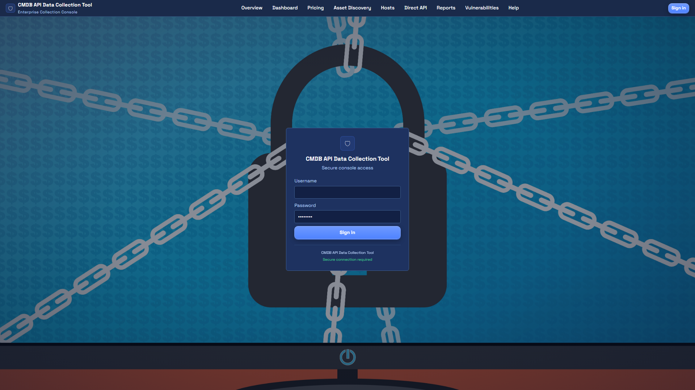
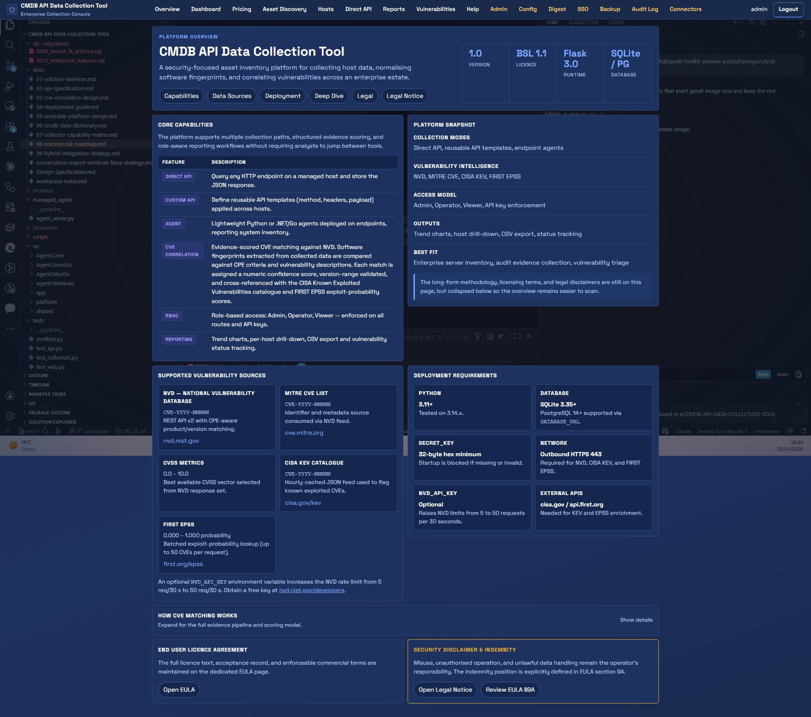
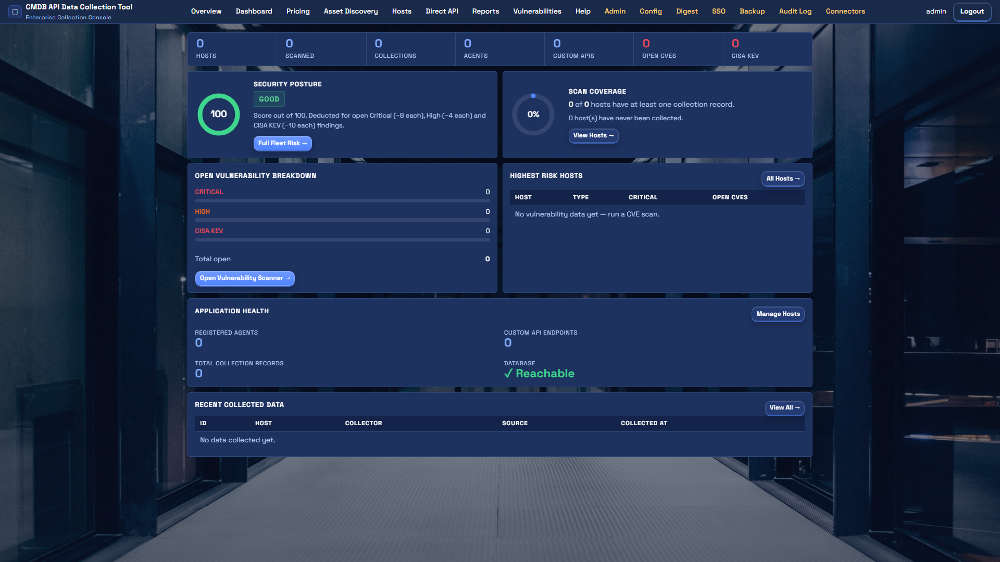
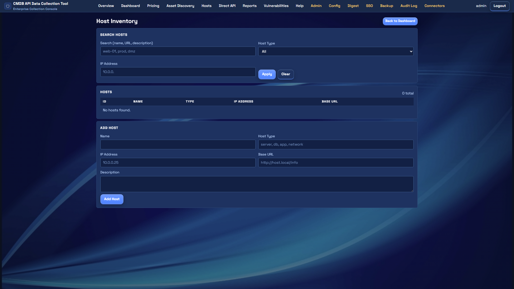
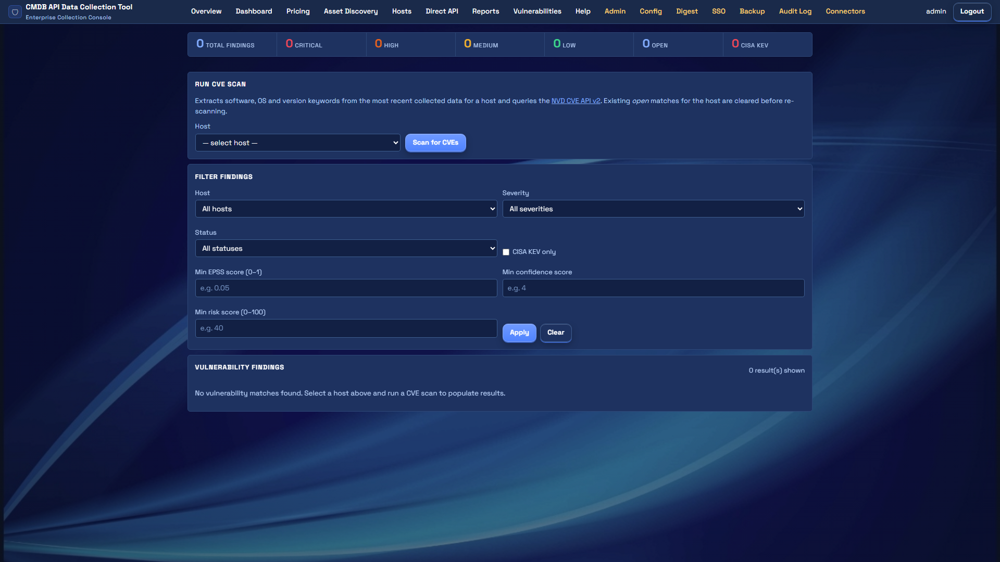
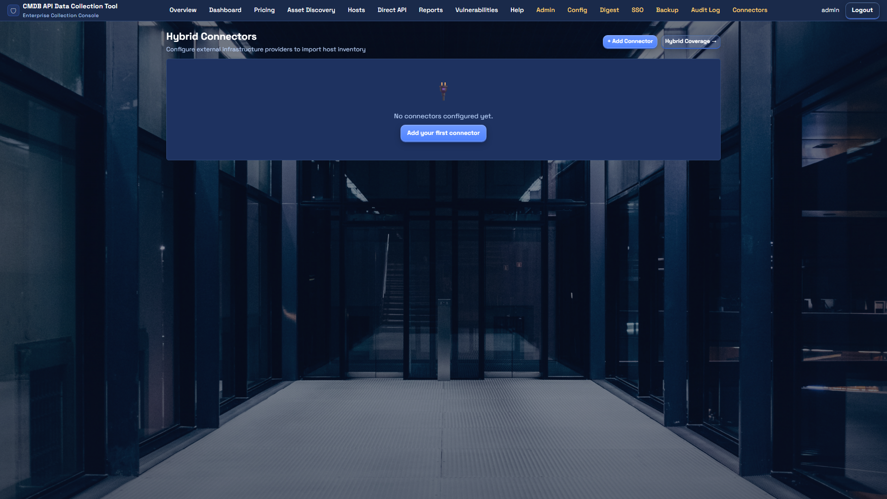
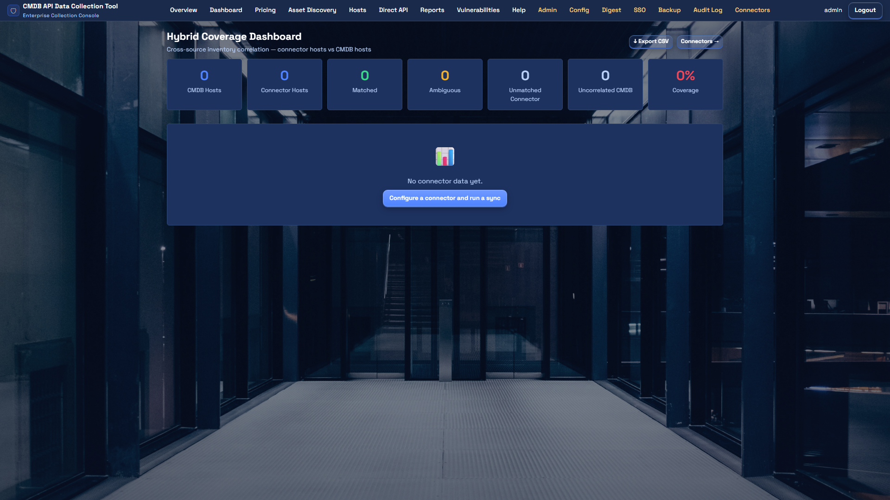
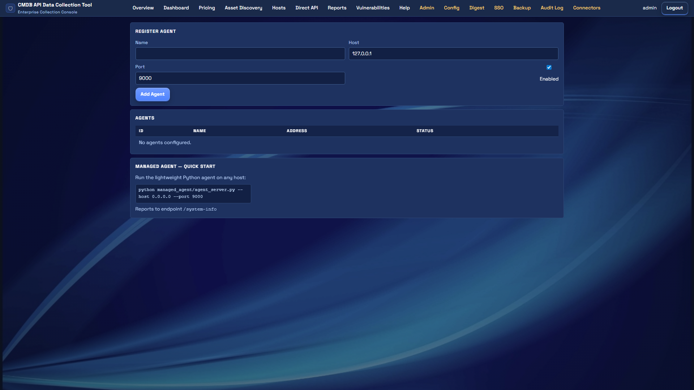
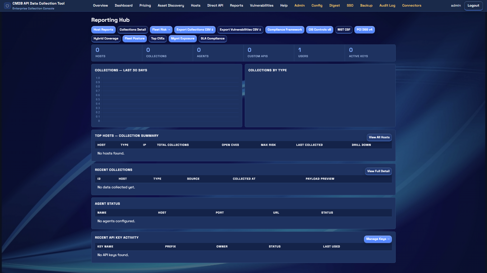
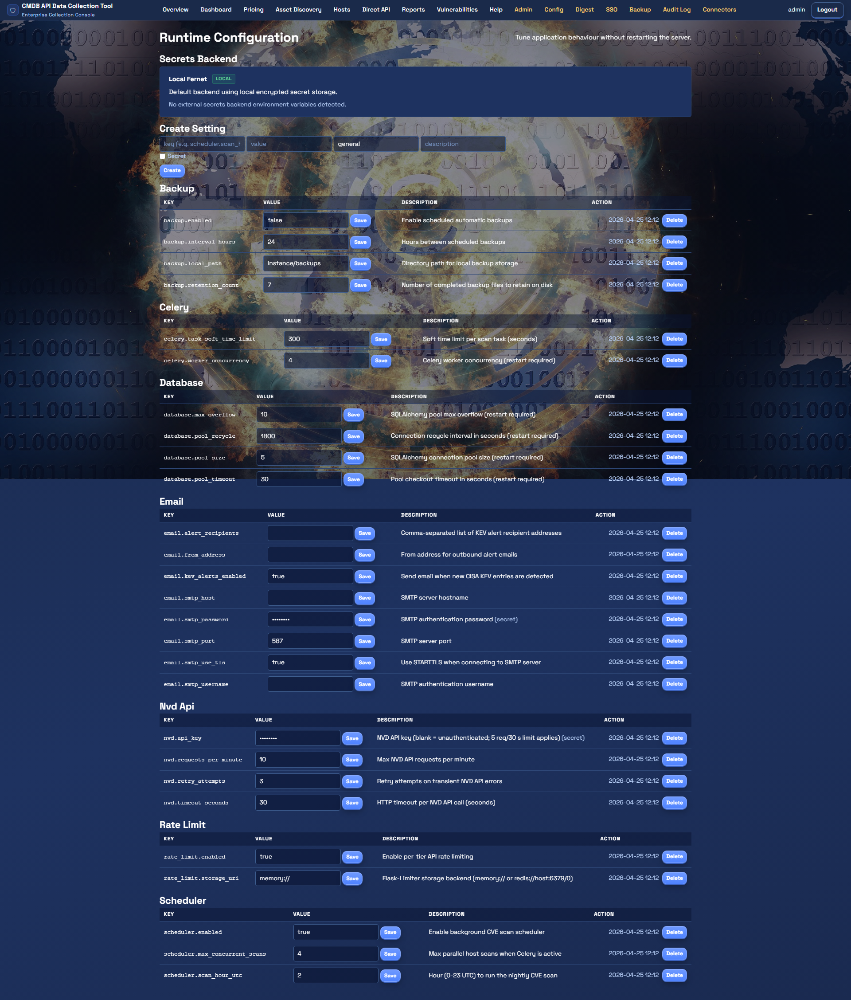
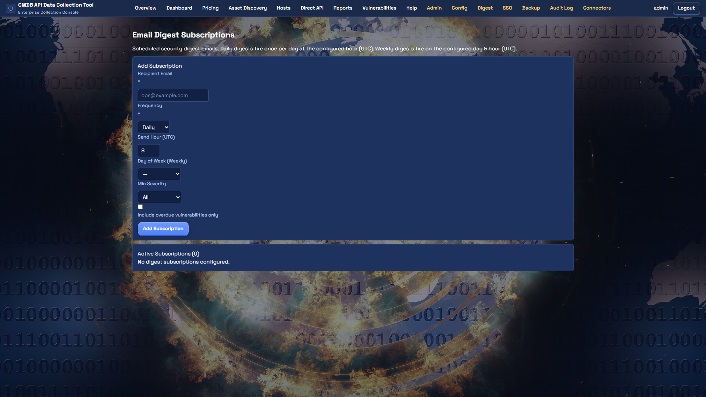
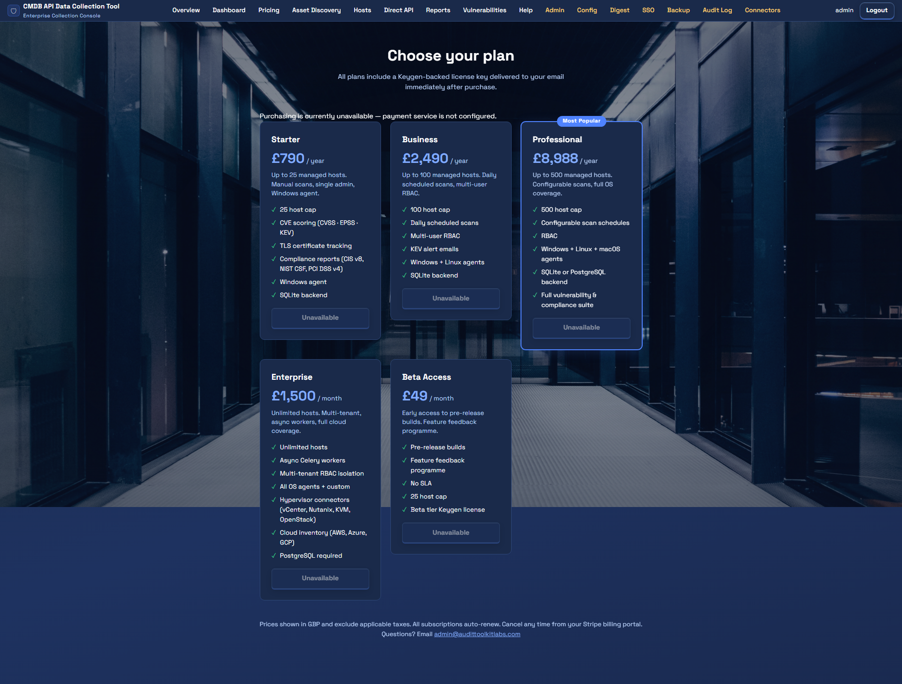
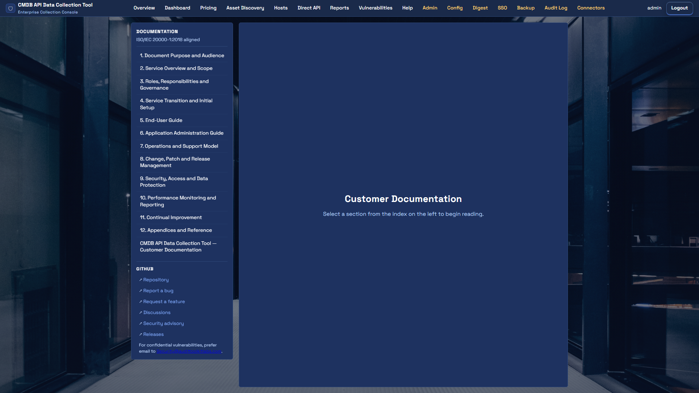
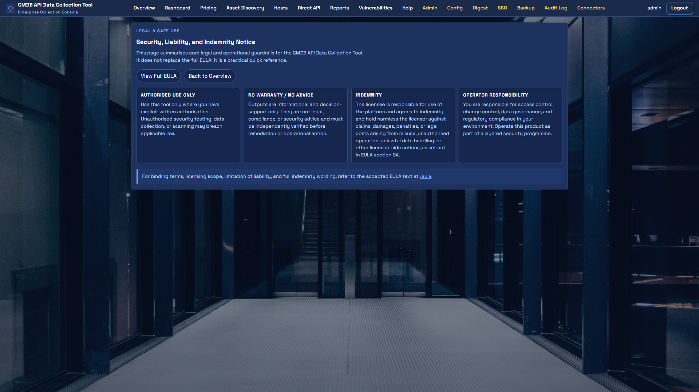
Technical Specification
| Runtime | Python 3.11+ |
| Framework | Flask 3.1.3 (app factory) |
| ORM | SQLAlchemy 3.1.1 |
| Database | SQLite (dev) / PostgreSQL (prod) |
| Task Queue | Celery + Redis / RabbitMQ |
| Encryption | Fernet AES-256-CBC (cryptography lib) |
| Auth | Flask-Login + SAML/OIDC + TOTP MFA |
| Rate Limiting | Flask-Limiter (per-tier) |
| Deployment | Linux (Docker / systemd) · Windows (IIS / service) |
| Licence | Business Source Licence (BSL) |
Deployment
Documentation
Full deployment, operation, integration, and security documentation included with every release. All documents are provided in Markdown format within the release package.
Contact us for licence enquiries, technical evaluation access, or deployment support.